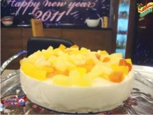

Cheese Cake
Recipe By Chef Gulzar Hussain

Ingrediants:
- Milk 1 kg
- Eggs 2
- Cream 1 cup
- Icing sugar 2 cup
- China grass 30 gm
- Creamy cheese 250 gm
- Butter 4 – 5 tbsp
- Season food as required
Cooking Directions:
- In a pan boil milk with icing sugar.
- When milk get thick add cream, creamy cheese and egg yolks in a mixing bowl beat them with the help of
beater, put it into milk mixture and cook on low flame.
- Make sure that milk should not boil during the process.
- In another pan add china grass with water as required, cook until the grass gets dissolved.
- Then add milk mixture and mix it properly with help of electric beater.
- Now grease the cake tray with butter, pour the mixture and set aside for a while in room temperature.
- Now place the mixture in fridge.
- In the end take out the cake from fridge and garnished with as required season food and cream and serve it.